01
Агрегатор — где сдать
карта партнёров,
фильтры,
бронирование
AskBefore — берлинский MedTech‑стартап, который создаёт экосистему для доступа к тестированию на заболевания, передающиеся половым путём.
Для пользователей в ней два продукта: карта, где можно найти клинику и записаться на анализ, и защищённый обмен результатами между людьми. Продукты друг о друге не знают — можно год пользоваться одним и ни разу не открыть второй.
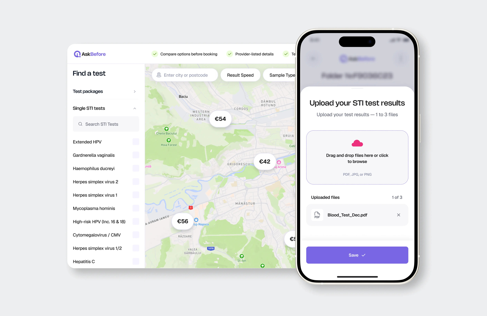
01
карта партнёров,
фильтры,
бронирование
02
папка с результатами,
ключ,
отправка партнёру
В продуктовой команде работало 5 человек: фаундер с бэкграундом Senior Product Designer, fullstack-разработчик, мобильный разработчик, дизайнер на частичной занятости и я.
Я присоединилась, когда у обоих продуктов был MVP. После тестирований с пользователями я сделала обмен понятнее и короче, а агрегатор предсказуемее в выборе.
01
Соответствия закону недостаточно, чтобы принять решения о приватности — нужно было учитывать стигму, страх раскрытия данных и ожидания анонимности
02
Принимала продуктовые решения с учётом того, какие данные можно собирать и хранить, на каких основаниях их использовать и какие меры защиты необходимы
03
Оба продукта уже работали в проде, я меняла их внутри существующего кода, а не собирала заново
7 → 3
шага создания папки обмена, ни одной функции не выброшено
→ чтобы сократить путь до первой ценности: папка готова раньше, чем человек теряет мотивацию её создавать
2
оси выбора в каталоге: что берут и чем оно отличается
→ чтобы каталог масштабировался, а человек понимал, где анализ, а где его условия
1
сущность пакета на карте, в корзине и в партнёрском портале
→ чтобы состав пакета менялся в одном месте, а не поддерживался вручную в трёх
29
сценариев заказа, проверенных с двух сторон на одной карте
→ чтобы продукт соответствовал GDPR и был бережным к пользователю
Обмен результатами — продукт, которого у людей раньше не было. Сравнить не с чем: нет привычной сущности, нет знакомого паттерна. На тестировании человек открывал экран и не понимал, где он находится и что от него хотят.
В агрегаторе можно опереться на знакомые паттерны: карту, каталог, корзину. В обмене предстояло объяснить саму механику — зачем нужна папка, кто запрашивает результаты и что увидит получатель. Поэтому вся работа здесь свелась к одному вопросу: как сделать понятным то, чего человек раньше не видел.
На тестировании участникам было непонятно, куда они попали, кто запрашивает результаты и что делать дальше.
Я разобрала фидбек: по каждой реплике из интервью выписывала, что именно у человека сломалось — на каком экране и в чём непонимание. Я просмотрела все записи и собрала материалы спринта вместе с экранами продукта в одном файле.
Баллы мы выставляли командой. Пять осей описывали удобство, ещё две — тон: как продукт объясняет безопасность и насколько по-человечески разговаривает. Это была рабочая шкала для разбора, не продуктовая метрика.
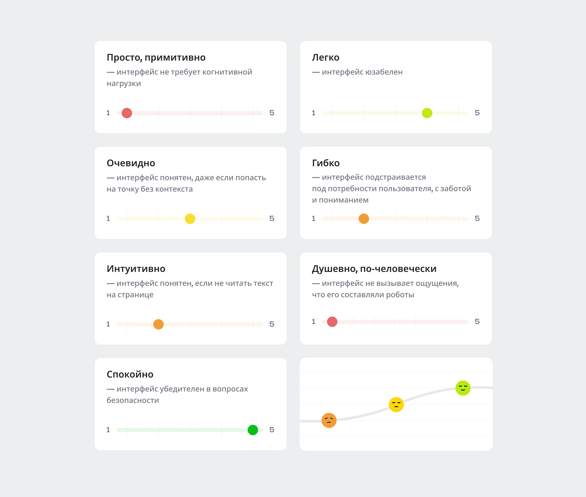
Самые низкие оценки получили "просто" и "душевно". В решениях они иногда конфликтовали: дополнительное объяснение или оформление поддерживало человека, но одновременно требовало его внимания.
Принцип мы выбрали такой: там, где они конфликтуют, выигрывает простота. Забота о пользователе здесь прежде всего в том, чтобы путь был понятным. Душевность оставили там, где она не стоит шагов: обновили устаревшие иллюстрации и завели онбординги на каждую часть продукта.
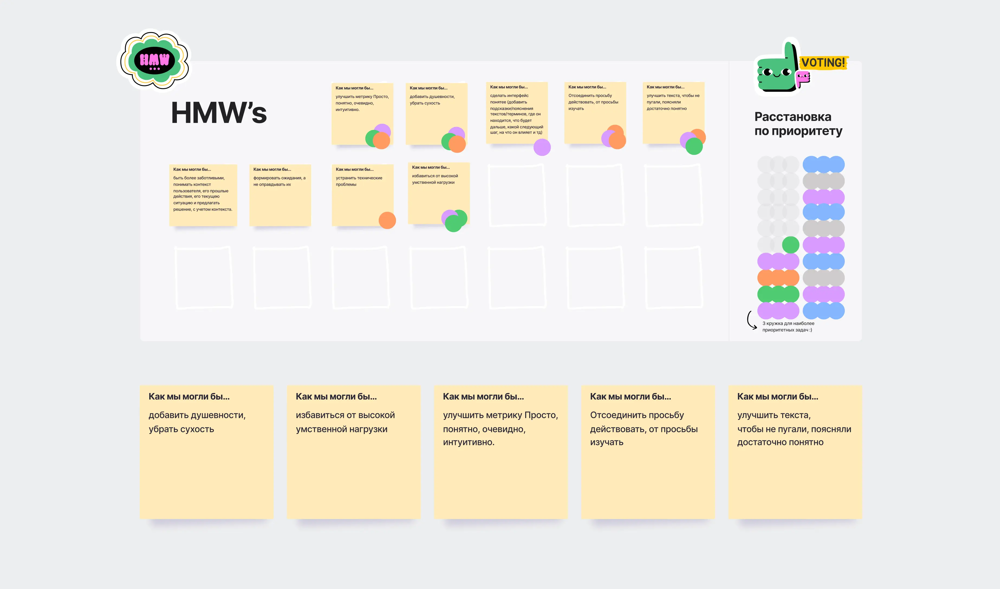
Раньше до создания папки нужно было пройти семь шагов, теперь три: создать, придумать ключ, сохранить его. Дальше папка уже существует — можно посмотреть превью, показать QR или вернуться к ней позже.
Изменился момент создания, а не набор функций. Раньше человек должен был сначала пройти все решения о содержимом. Теперь загрузка результатов, запрос к другому человеку и оформление стали редактированием папки и их можно выполнять в любом порядке — шагов они не стоят.
Ни одной функции мы не убрали. Убрали требование пройти их все подряд, чтобы получить результат.
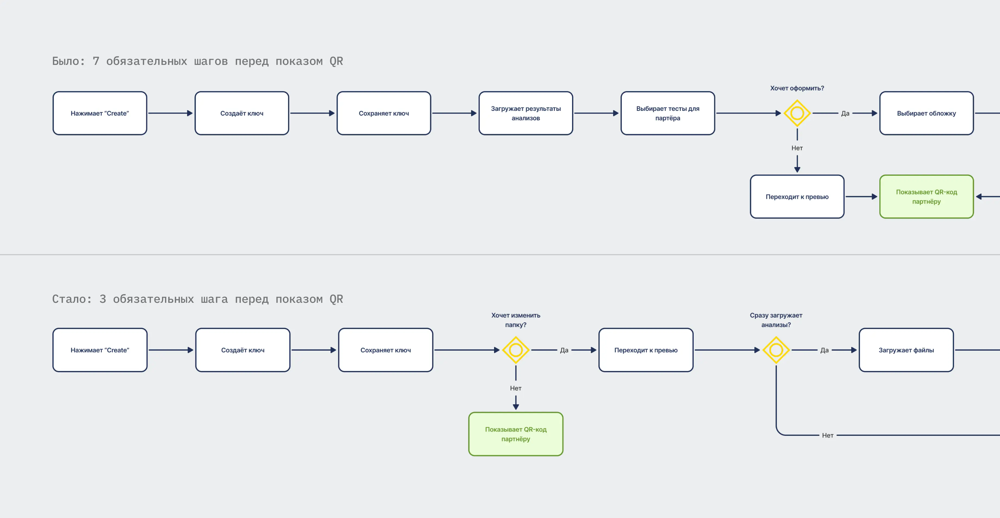
Прототип я собрала сразу в коде, внутри продукта.
Мы пригласили участницу, у которой на предыдущем тестировании было больше всего сложностей, и провели её по новому пути. Один человек — не выборка, это проверка на худшем случае: если путь не работает у неё, дальше разговаривать не о чем.
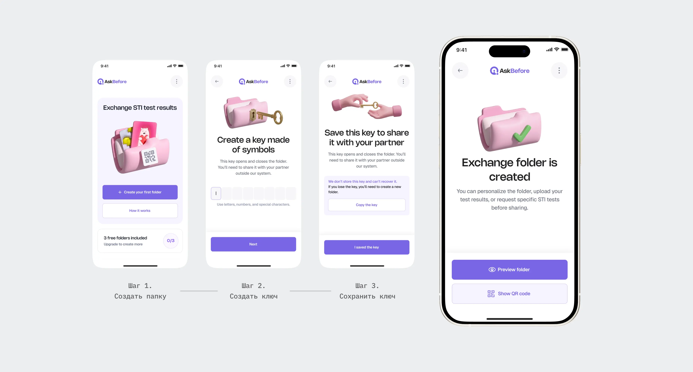
Из этих прогонов вырос вывод, которого в задаче не было: обмен нужно переносить в мобильное приложение.
Первая причина — паттерн. Обмен результатами — это разговор двух людей, и телефон подходит для такого обмена: показать и отсканировать QR-код, посмотреть результаты.
Вторая — возможность ограничить захват экрана. Человек показывает другому свои медицинские документы, и в вебе с этим сделать нельзя ничего. В нативном приложении механизм есть. Полностью проблему он не закрывает, но разница между "невозможно" и "неудобно" здесь важна.
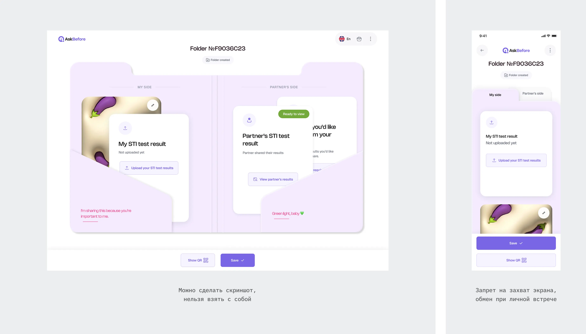
Приложение сейчас в разработке, ведёт его вторая дизайнер. Я задала принцип переноса и отдала гайдлайны, флоу раскладывала она. Я веду регулярное ревью и подключаюсь к проектированию в сложных местах.
В первой версии агрегатора уже были анализы, пакеты и партнёры на карте. Я продолжила работу, когда появились новые условия выбора. Их нужно было встроить так, чтобы каталог не превращался в один длинный список всего доступного.
Фильтры лежали там же, где тесты и пакеты, — одним общим блоком выбора под заголовком "Filters". Картинка не складывалась ни у команды, ни у пользователя: непонятно, что здесь предмет выбора, а что его уточнение.
Я развела их по тому, чем они являются. Тесты и пакеты — это каталог: позиции, которые человек берёт. Фильтры — атрибуты уже выбранных позиций: не что он берёт, а чем один вариант отличается от другого.
Это дало правило для следующих изменений: новый анализ попадает в каталог, новое условие поиска — в фильтры. Разделение зависит от роли элемента, а не от того, куда его удобнее поместить на текущем экране.
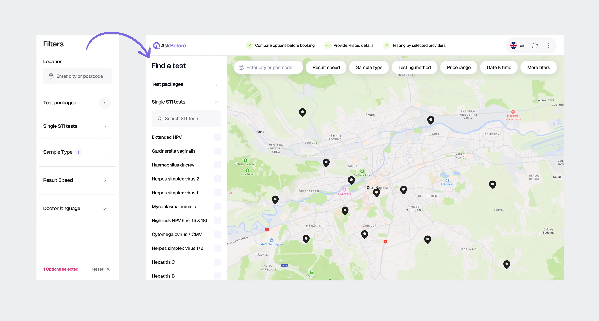
Переговоры с партнёрами вела фаундер. Она приносила данные о том, чем отличаются их предложения, а я определяла, какие различия становятся фильтрами, где они находятся и как называются в интерфейсе.
Например, один анализ мог выполняться разными методами, с разной ценой и сроком готовности. Так появился фильтр по методу — базовое или расширенное тестирование. Рядом добавились ценовой диапазон и выбор даты и времени.
С пакетами нужно было отдельно разобраться в составе и в том, как они связаны между экранами.
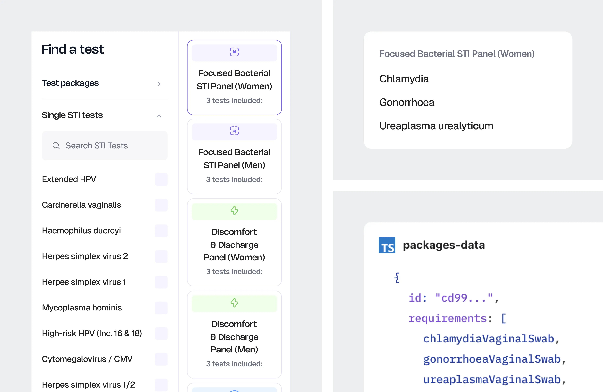
Первый набор появился как маркетинговая гипотеза — по ситуациям, в которых человек может захотеть сдать анализы. После обсуждения с клиникой состав пересмотрели: партнёр объединял анализы по другой логике.
При этом пакет на карте, в корзине и в партнёрском портале был описан отдельно. Я собрала его в одну сущность и определила, какие атрибуты нужны в каждой точке.
На фронтенде вынесла состав пакета в общее место, откуда его использовали разные поверхности, разработчик затем подключил бэкенд.
Из переговоров с партнёрами пришло ограничение: часть клиник уже ведёт запись в своей системе и не готова дублировать слоты в нашей. Поэтому бронирование через AskBefore сделали отдельной настройкой — партнёр может включить или выключить его.
Вторая ось — оплата: через платформу или на месте. В продукте она определяется тарифом партнёра и не зависит от настройки бронирования.
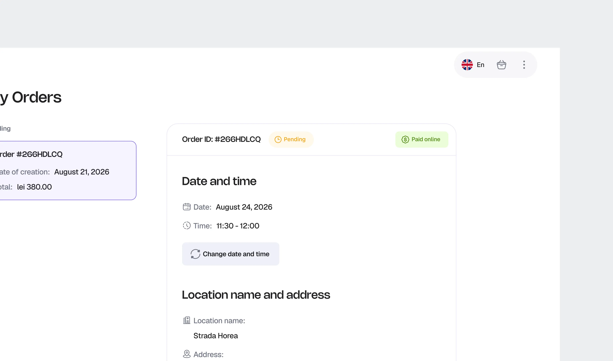
Две оси дают четыре конфигурации. Для каждой нужно объяснить человеку, что он оформляет, когда платит и как узнает время приёма. Знать внутреннюю конфигурацию клиники ему для этого не нужно.
Конфигурация задаёт только условия, а дальше заказ может пойти разными путями: человек пришёл, пришёл уже после удаления данных, не пришёл, отменил сам или получил отмену от партнёра. Без бронирования таких путей шесть, с ним — восемь, и каждый проходит в двух вариантах оплаты. Всего 29 сценариев.
Я разложила их на одну карту: по одной оси — конфигурации партнёра, по другой — сценарии. В каждой ячейке записано, что видит пользователь, какие письма получает, что делает партнёр и в каком состоянии остаётся заказ. Так я проверяла согласованность: не обещает ли письмо того, чего нет в заказе, и знает ли партнёр, чего от него ждут. Экраны для карты я сняла с прода, а пути между ними спроектировала с нуля.
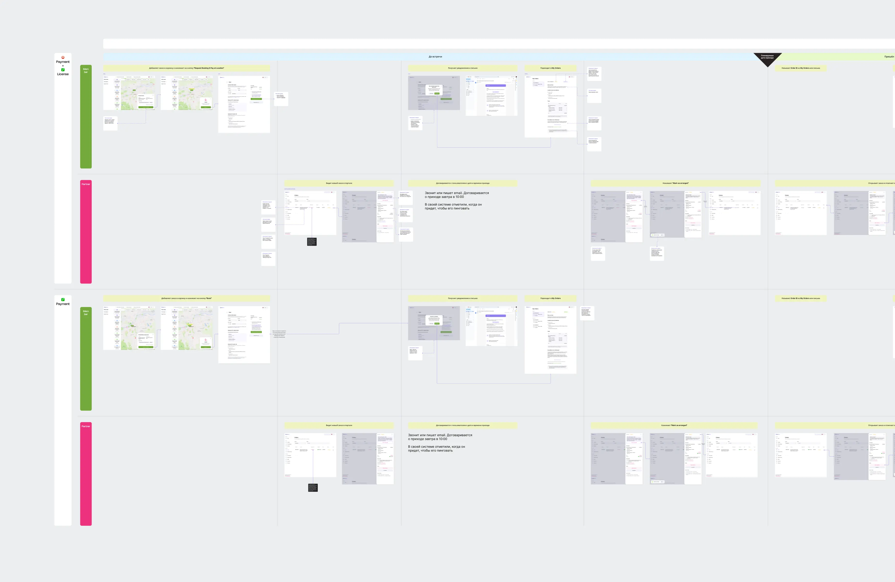
Ситуация: у партнёра выключено наше бронирование. Его предложения остаются на карте, но выбрать слот через AskBefore нельзя. Значит, интерфейс должен объяснить, как человек узнает время приёма.
Я разложила сценарий на обе стороны. Партнёр получает оповещение: связаться с человеком, согласовать время, отметить факт договорённости у нас и внести запись в свою систему.
Пользователь вместо выбора слота видит, что клиника свяжется с ним напрямую. Согласованное время платформа не получает, поэтому в заказе оно не появится. Это ограничение я тоже обозначила в интерфейсе.
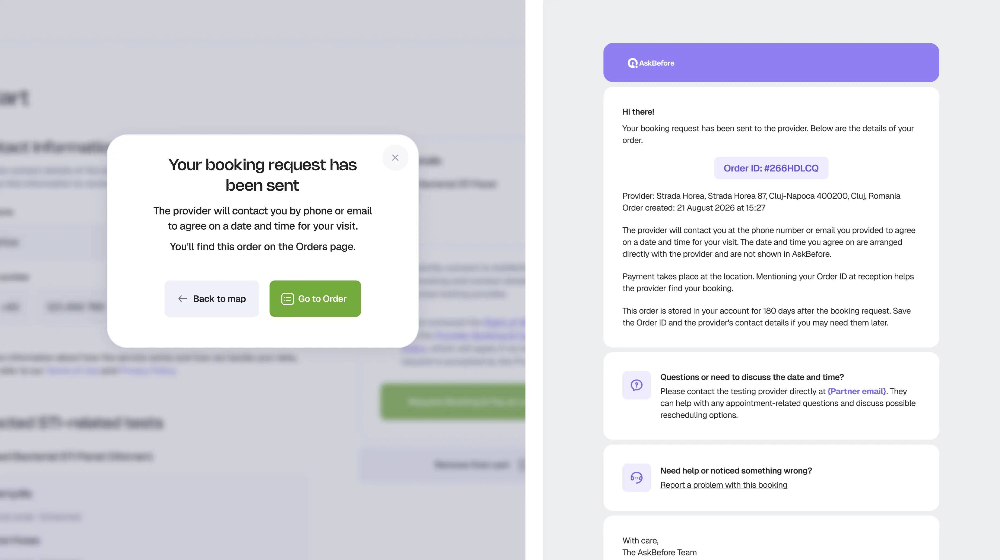
Если человеку важно сразу выбрать дату и время, он может воспользоваться фильтром на карте. Тогда предложения без бронирования через платформу не попадают в выдачу.
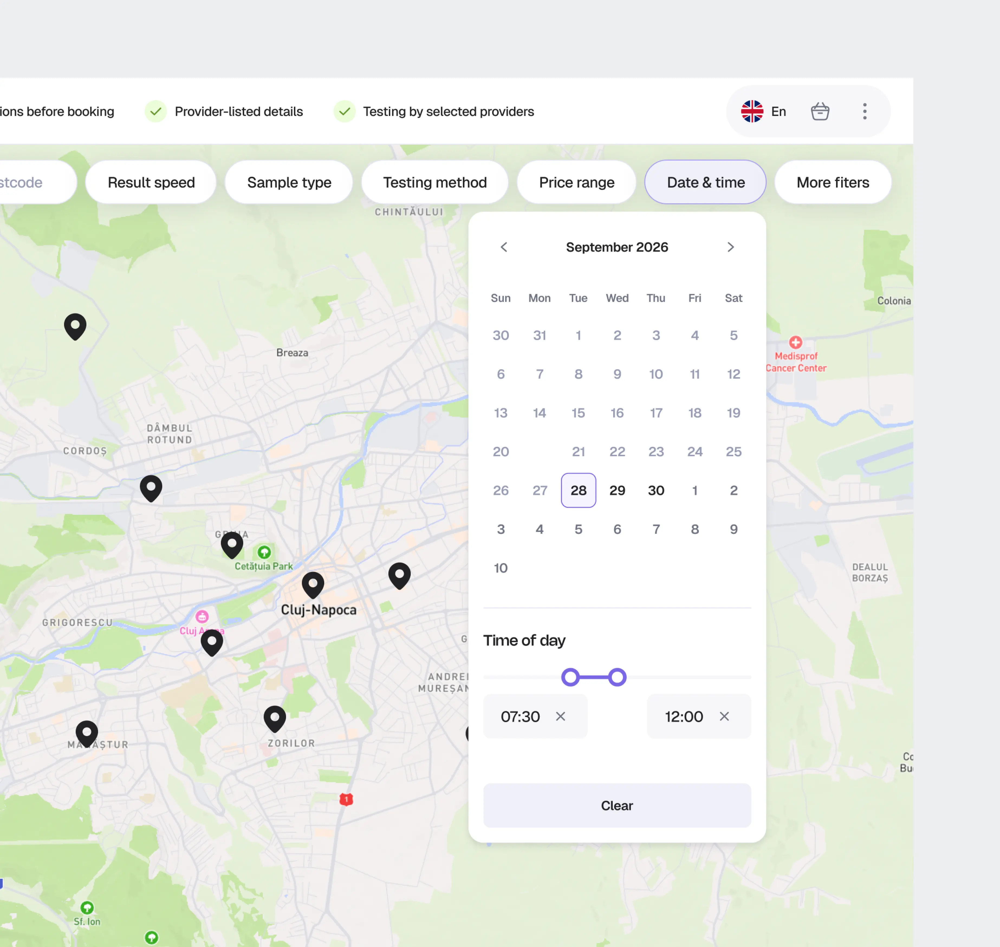
Бронирование определяет, как человек договаривается о времени, способ оплаты — какие действия с деньгами доступны через платформу.
При оплате через AskBefore я предусмотрела ветку запроса возврата: пользователь отправляет запрос, партнёр рассматривает его со своей стороны. Сам запрос ещё не означает возврат. Для этой конфигурации предусмотрен более долгий срок хранения данных заказа — они могут понадобиться при разборе спора.
При оплате на месте возврат через AskBefore недоступен: платформа не принимала платёж. Вопросы расчётов человек решает с клиникой напрямую и в интерфейсе важно сказать именно это.
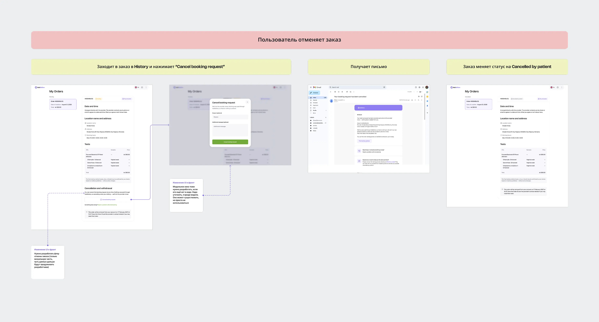
Из карты получились подписи под полями, баннеры, кнопки, модалки и письма. У похожих элементов могли различаться текст и поведение: одна конфигурация позволяла выбрать время, другая — только отправить заявку.
Я проверяла их по одному правилу: если ограничение влияет на решение человека, он должен увидеть его в самом сценарии.
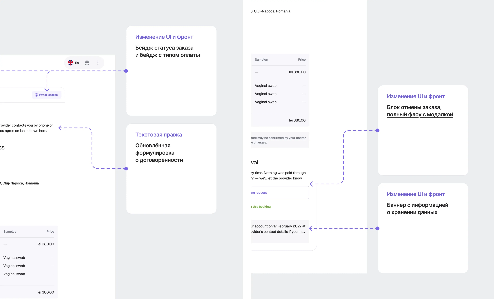
Правило одно на все ветки: там, где продукт чего‑то не знает, не контролирует или собирается сделать что‑то с деньгами человека, он это называет. В домене, где человек и так тревожен, умолчание читается как подвох.
Осталось показать, как два продукта живут рядом. Вход у них один, но набор доступного зависит от носителя.
В целевой схеме на десктопе и в мобильном браузере остаются карта и заказы, для обмена человек переходит в приложение, где доступны оба сценария.
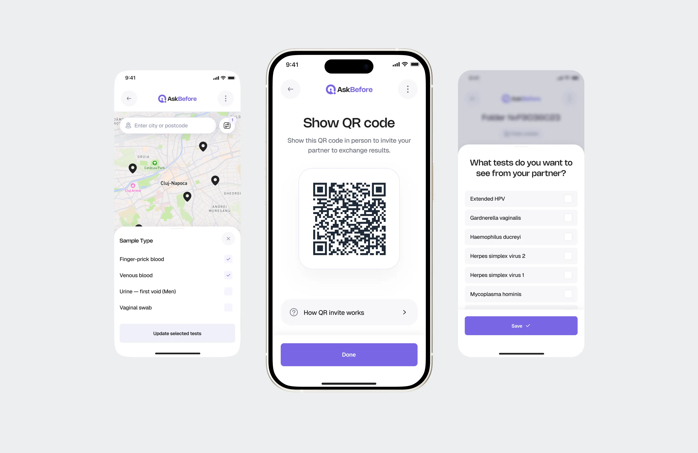
Мы решили не поддерживать веб-обмен. Это означает дополнительный барьер: без установки приложения человек не сможет обменяться результатами через AskBefore. Пошли на это осознанно — носитель здесь влияет не только на удобство, но и на то, насколько пользователь контролирует свои медицинские документы.
Карта при этом работает и в вебе, и в приложении. Продукты остаются независимыми, общий у них только вход.
Продукт запущен недавно, поэтому показываю, что уже сделано и какие результаты получены. Новый путь обмена успели проверить на небольшой выборке: нашли, где пользователям непонятно, поправили и проверили снова. Мобильное приложение ещё в разработке, так что его проверка впереди.
7 → 3
шага создания папки обмена, ни одной функции не выброшено
→ чтобы сократить путь до первой ценности: папка готова раньше, чем человек теряет мотивацию её создавать
2
оси выбора в каталоге: что берут и чем оно отличается
→ чтобы каталог масштабировался, а человек понимал, где анализ, а где его условия
1
сущность пакета на карте, в корзине и в партнёрском портале
→ чтобы состав пакета менялся в одном месте, а не поддерживался вручную в трёх
29
сценариев заказа, проверенных с двух сторон на одной карте
→ чтобы продукт соответствовал GDPR и был бережным к пользователю
Носитель я определила после редизайна, а не до. Мы перерисовали десктопный обмен, собрали прототип, прогнали по нему пользователя — и только из этого прогона стало ясно, что сценарий вообще не десктопный.
Вопрос "на каком носителе живёт этот сценарий" стоило задать до того, как рисовать экраны. Часть взаимодействий пришлось проектировать повторно, уже под мобильную платформу.